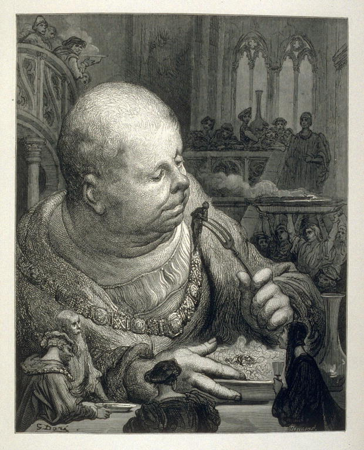

Jorge Furtado


“Que aquilo que nos é contado seja ficção ou realmente mentira (o que implica uma intenção) sempre se trata, todavia, de algo diverso da verdade literal. Nesse contexto não importa se existe ou não uma justificação filosófica para a verdade objetiva, e uma teoria correspondente da verdade. Importa a necessidade de distinguir entre a verdade e a não verdade.”
Jack Goody, Da oralidade à escrita, em “A cultura do romance”, org. Franco Moretti, ed. Cosac Naify, São Paulo, 2009.
Quando Téspis de Ática, no século V a.C., disse as palavras “Eu sou o Deus Dionísio!” ninguém na platéia achou que isso era verdade. Téspis era um ator (e autor) sobre um palco, dizendo uma fala, a primeira que se tem notícia da história da dramaturgia ocidental. Antes dele, os atores declamavam versos, em coro. Se vinte pessoas dizem ao mesmo tempo “Eu sou o Deus Dionísio!”, ninguém na platéia supõe que todos os componentes do coro se julgam Dionísio. Mas se uma pessoa diz, “Eu sou o Deus Dionísio!”, a situação se complica. O espectador, que marcou de ir ao teatro com a esposa e pagou ingresso, imagina que aquela afirmação de Téspis faça parte da peça, o que as crianças chamam de “faz de conta que” e o Coleridge chama de “suspensão temporária da descrença” (1). Tudo bem, faz de conta que você é o Deus Dionísio, e aí?
A história da narração oral se mistura à origem do homem, os primeiros gritos e sussurros nas cavernas ao certo já incluíam narrativas não-ficcionais (“Hoje matei um tigre”) e ficcionais (“Hoje matei trinta tigres”). A primeira escrita no teto da caverna também devia misturar os gêneros, indo da contabilidade mais simples (“Trouxe trinta tigres”) à poesia mais pura (“Três tigres tristes”).
Narrativas épicas, mitológicas, religiosas, misturam-se com relatos de viagem, filosofia, ciências, desde o surgimento da escrita. Só podemos imaginar como nossos livros mais antigos, Gilgamesh, A Ilíada, a Odisséia, a Bíblia, eram lidos (ou ouvidos) pelo pessoal na época em que foram escritos.
A maturidade da ficção só vai aparecer muito tempo depois, com a invenção do romance. Ninguém leu Dom Quixote achando que aquilo realmente tinha acontecido. Ao criar o romance moderno, Cervantes descobriu um novo mundo, abrindo uma clareira no cipoal do pensamento humano: faça de conta, imagine, e sua mente irá percorrer novos e surpreendentes caminhos. Daniel Boorstin definiu com perfeição o tamanho do feito: “Enquanto Copérnico mudou o nosso olhar da terra para o sol, Cervantes mudou-o do alto espaço para o interior do homem. (...) O criador estava entrando em território novo. O romance se estendia para fora ao mesmo tempo em que olhava para dentro. O que a estatística e a ciência social iam conquistar para a experiência pública, a arte do romance fez para a vida privada”.
Mudança mais significativa na relação do texto com o leitor e sua “necessidade de distinguir entre a verdade e a não verdade” só foi acontecer em 1722, quando Daniel Defoe publicou “Diário do ano da peste”, sub-titulado “A terrível calamidade em um breve relatório da manifestação e dos efeitos da peste tirado das memórias de uma pessoa que vivia lá”. Era mentira, Defoe inventou quase tudo, mas muitos leitores leram achando que era verdade. Três anos depois ele publicou “As aventuras de Robson Crusoé”, onde descrevia em detalhes as desventuras de um náufrago. O livro foi vendido como relato de viagem, que eram comuns na época, e lido por quase todo mundo como sendo verídico. Foi um grande sucesso e provocou alguns protestos, a ponto de novas edições saírem com um aviso de se tratar de história inventada.
Por mais que descreva suas aventuras em detalhes, ninguém lê Rabelais achando que Gargântua existia de verdade e se alimentava de seres humanos. Ao descrever em detalhes um ser humano possível numa situação inventada, informando hora e lugar do naufrágio e batizando seu personagem com nome e sobrenome, Defoe estabeleceu uma nova fronteira do romance. Parece verdade, poderia ser verdade, e você só sabe que é mentira porque eu estou dizendo que é mentira.
Quem assiste um grande documentário, como “Cabra marcado para morrer”, “Gray Garden” ou “Na captura dos Friedmans” acredita estar vendo não-ficção, porque seus realizadores nos informam que se trata de não-ficção, mas os três filmes poderiam ser grandes obras ficcionais sem mudar uma só palavra ou um só fotograma, bastaria que seus autores assim o proclamassem: são atores, eu inventei tudo.
O documentário, a não-ficção e o jornalismo afirmam dizer a verdade, e nós assim acreditamos, o que nem sempre é uma boa idéia. O romance nos lembra que aquilo que não é verdade pode também não ser mentira, pode ser ficção.
X
“Dar nome aos bois” é um dito popular que significa apontar culpados, nomear algo ou alguém a quem se acusa de algo. Em inglês, “call a spade a spade”, em francês “appeler um chat um chat”. Um verso de Vitor Hugo: “Chamo o porco por seu nome, por que não?” (Je nommais le cochon par son nom; porquois pas?). Pás, gatos ou porcos, trata-se de nomear algo para esclarecer de quem se fala.
Recentemente a presidente da Associação Nacional de Jornais declarou que seus associados são a oposição real ao “governo do país”, “posição oposicionista” (sic) assumida pelo fato da “oposição estar extremamente fragilizada”. Como nomear este conjunto que forma a oposição no Brasil, ANJ, Abert, os grandes jornais, tevês e rádios, mais os partidos políticos de oposição, o PSDB e o DEM?
Seguidamente me refiro ao grupo como “antiga imprensa”, numa tentativa de distingui-los da “nova imprensa”, formada pelos blogs e sites. A denominação é imprecisa - algumas revistas e jornais de menor tiragem não fazem parte do grupo, grandes veículos de comunicação também tem sites e blogs - e implicante, parece que o que é novo é bom e o que é antigo é ruim, em quase tudo se dá o oposto.
(O mesmo problema tem a expressão “velha mídia”, acentuando o preconceito contra o velho, louvando acriticamente o novo, como faz a publicidade e fizeram muitos governos totalitários).
Paulo Henrique Amorin, em seu site “Conversa Afiada”, inventou o termo “PIG, partido da imprensa golpista”, que tem se difundido. Me parece expressão de humor duvidoso, ofensiva, que rebaixa ou mesmo inviabiliza o diálogo, fica difícil a conversa com alguém depois de chamá-lo de porco. Conversar com a oposição é condição para a democracia.
Muita gente chama a este grupo oposicionista de “a grande mídia” - expressão que me soa paranóica, hiperbólica, cabeluda e verde, que medo, lá vem a grande mídia! - ou simplesmente “a mídia”, o que sempre me pareceu uma simplificação.
“Mídia”, diz o Houaiss, é “todo suporte de difusão da informação que constitui um meio intermediário de expressão capaz de transmitir mensagens; meios de comunicação social de massas não diretamente interpessoais (como, por exemplo, as conversas, diálogos públicos e privados). Abrangem esses meios o rádio, o cinema, a televisão, a escrita impressa (ou manuscrita, no passado) em livros, revistas, boletins, jornais, o computador, o videocassete, os satélites de comunicações e, de um modo geral, os meios eletrônicos e telemáticos de comunicação em que se incluem também as diversas telefonias.”
Ou seja, o que não é conversa privada é mídia. A origem é o inglês, “media”, uma redução de “mass media”, meios (de comunicação) de massas.
Hoje, que eu saiba pela primeira vez, este grupo se auto-denominou “a mídia”, numa manchete da Folha de São Paulo:
Mídia defende limite a capital estrangeiro
Jornais e TVs recorreram à Procuradoria para pedir medidas contra possível controle de órgãos de comunicação por empresas de fora do país. ANJ e Abert acusam iG, Terra e grupo Ongoing de violar regra que limita capital externo a 30%. iG nega, e demais não se manifestam. As associações que representam os maiores jornais e canais de TV do país anunciaram ontem... (segue a notícia)
X
Ficamos sabendo que o grupo que se auto-proclama a oposição de fato no Brasil se auto-denomina “a mídia”, e que o Terra, o iG, o grupo Ongoing não fazem parte do grupo.
Que seja, portanto, a mídia.

Na ilustração de Gustave Doré, o gigante Gargântua.
x
(1) Samuel Taylor Coleridge, filósofo inglês (21/10/1772 – 25/07/1834). Aparece em “Biographia Literaria”, ensaio publicado em 1817, "the willing suspension of disbelief".
O trecho:
”... It was agreed, that my endeavours should be directed to persons and characters supernatural, or at least romantic, yet so as to transfer from our inward nature a human interest and a semblance of truth sufficient to procure for these shadows of imagination that willing suspension of disbelief for the moment, which constitutes poetic faith. Mr. Wordsworth on the other hand was to propose to himself as his object, to give the charm of novelty to things of every day, and to excite a feeling analogous to the supernatural, by awakening the mind's attention from the lethargy of custom, and directing it to the loveliness and the wonders of the world before us ...”
x
A idéia da suspensão da descrença aparece claramente no prólogo de Henrique V, de William Shakespeare, aqui na tradução de Beatriz Viégas-Faria, publicada pela L&PM:
Coro:
(...) Porém, perdoai, damas e cavalheiros, os espíritos rasos e não-elevados que ousaram, neste tablado que não é digno de vós, apresentar tema tão grandioso. Poderá este escaso espaço conter em si os espaçosos campos da França? E conseguiremos nós abarrotar dentro deste círculo de carpintaria os capacetes que aterrorizaram o próprio ar de Azincourt? Ah, perdão: uma vez que um número redondo pode significar, em pouco espaço, um milhão, então vamos nós, cifras zero nessa grande soma de eventos, atacar com as forças da nossa imaginação. Podeis supor que, dentro do abraço destes muros que nos cercam, estão agora confinadas duas poderosas monarquias, cujas fachadas altivas são escarpas geminadas que o oceano, ali estreito e perigoso, divide, separa e afasta. Fazei render as nossas imperfeições com os vossos pensamentos.

{kind=link}